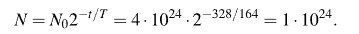
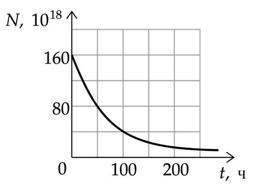
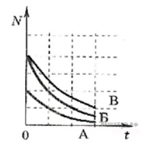

Содержание
Задача 1
Период полураспада радиоактивного изотопа кальция 45 20 Ca составляет 164 суток. Если изначально было 4*1024 атомов, то примерно сколько их будет через 328 суток?
Решение
Согласно закону радиоактивного распада, по истечении времени t = 328 суток от первоначального количества радиоактивных атомов N 0 = 4*1024 останется примерно

Задача 2
Дан график зависимости числа нераспавшихся ядер эрбия 172 68 Er от времени.
Чему равен период полураспада (в ч) этого изотопа эрбия?

Решение
Период полураспада — это время, в течение которого распадается
половина наличного числа радиоактивных атомов. Из графика видно, что число
не распавшихся ядер эрбия уменьшается вдвое за 50 часов. Это и есть искомый
период полураспада.
Ответ: 50
Задача 3
На рисунке приведена зависимость от времени числа не распавшихся ядер в процессе
радиоактивного распада для трех изотопов. Для какого из них период полураспада наибольший?

Решение
Период полураспада — это время, в течение которого распадается
половина наличного числа радиоактивных атомов. Из графика видно,
что максимальное время для распада половины ядер требуется ядрам изотопа В.
Значит, у изотопа В максимальный период полураспада.
Ответ: B.